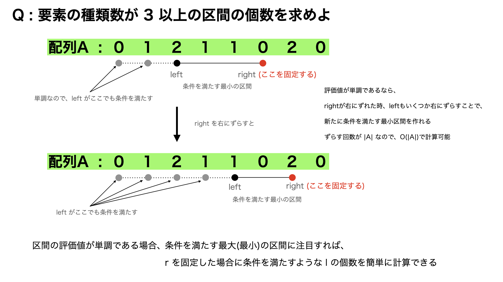

#include<iostream>#include<vector>using namespace std;int main(){ int n , k;cin >> n >> k; vector<int> A(n); for(int i = 0 ; i < A.size() ;i++)cin >> A[i]; vector<int> count(1000000,0); int kind_of_Ai = 0; int ans = 0; int lef = 0; for(int rig = 0 ; rig < A.size() ; rig++ ){ if(!count[A[rig]])kind_of_Ai++; count[A[rig]]++; while(kind_of_Ai > k){ count[A[lef]]--; if(!count[A[lef]])kind_of_Ai--; lef++; } ans += rig - lef + 1; //lef <= x <= rig を満たす x について、[x , rig]が条件を満たす } cout << ans << endl;